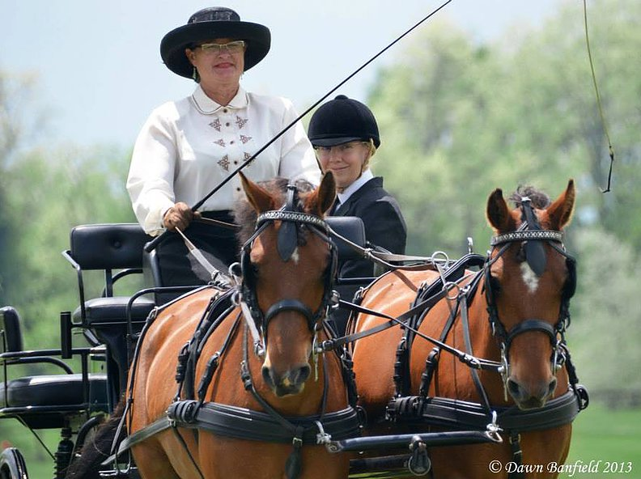

Swedish Gotlands …
the Best Pony on the Planet!

Have you ever known a perfect pony? Let me define my idea: a pony you can trust. Trust to be kind to you, your children or grandchildren. It won’t bite or kick. It’ll come up to you in the pasture, and put up with anything you want to do with it, whether it be lead-line, trail riding, lessons, hunting, jumping, driving, eventing, western pleasure or barrels, dressage, or dressing it up for a birthday party or parade with glittered hooves and carrying flags or balloons on it.  It’ll be there for you when you need a buddy or want a strong mount to carry that special child through a first show or three day event. It will know when it has that special assignment to hurry through barrels, cones or a cross country course or walk patiently with a handicapped rider or young child astride.